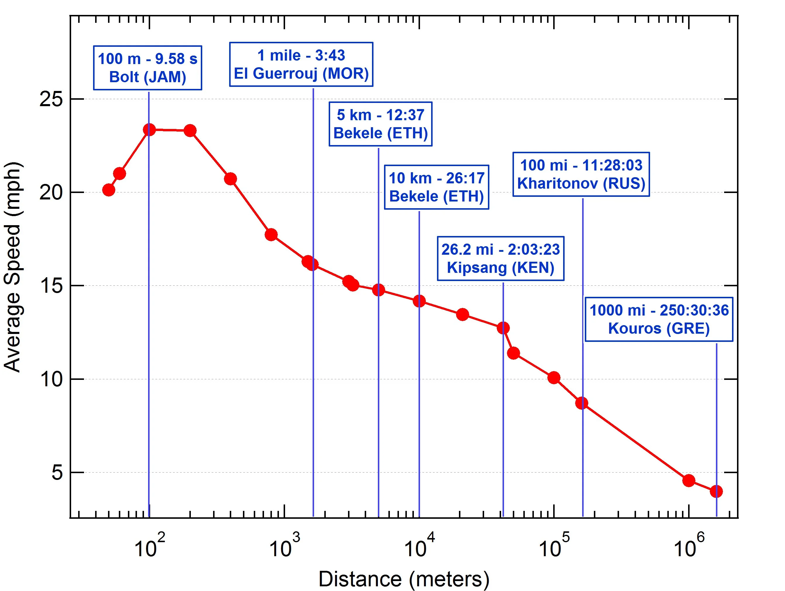

# convert gender to factor
# split timestamp into date and time
# convert dates, times into better formats
# calculate distance in miles, km, and pace
# rename columns
strava_data <-
strava_data %>% rename(
distance_m = `distance (m)`,
elapsed_s = `elapsed time (s)`,
elevation_m = `elevation gain (m)`,
avg_hr = `average heart rate (bpm)`
) %>% mutate(gender = as.factor(gender)) %>% separate(
timestamp,
sep = " ",
into = c("date", "time"),
remove = F
) %>% mutate(
date = as.Date(date, format = "%d/%m/%Y"),
hour = as.numeric(substr(time, start = 1, stop = 2)),
hourmin = hm(time),
timestamp = dmy_hm(timestamp),
distance_km = distance_m / 1000,
elapsed_min = elapsed_s / 60,
distance_mi = distance_km * 0.621371,
pace_per_mi = elapsed_min / distance_mi,
mph = distance_mi/(elapsed_min/60)
) %>% dplyr::select(-time)
# do some basic cleaning - get rid of 0 time or 0 distance
# filter to distances we want
# filter out unrealistic paces
strava_data <- strava_data %>%
filter(
distance_m != 0 &
elapsed_s != 0 & distance_mi <= 27 & distance_km >= 4.5 &
pace_per_mi <= 15 & pace_per_mi >= 4.5
)
# summarize data by athlete
# get rid of NaNs and Infs for heart rate
strava_data_summary <-
strava_data %>% group_by(athlete) %>% summarize(
n_races = n(),
gender = first(gender),
meandist = mean(distance_m),
maxdist = max(distance_m),
mindist = min(distance_m),
meanele = mean(elevation_m),
maxele = max(elevation_m),
avghr = mean(avg_hr[!is.na(avg_hr)]),
maxhr = max(avg_hr[!is.na(avg_hr)]),
maxtime = max(elapsed_s),
meantime = mean(elapsed_s),
meanpace = mean(pace_per_mi),
minpace = min(pace_per_mi),
maxpace = max(pace_per_mi),
datediff = max(timestamp) - min(timestamp)
) %>% rowwise() %>% mutate(
avghr = ifelse(!is.nan(avghr) & !is.infinite(avghr), avghr, NA),
maxhr = ifelse(!is.nan(maxhr) & !is.infinite(maxhr), maxhr, NA)
)Example Data Analysis
Introduction and Data Description
Question: How does running pace change with race distance for recreational runners who use Strava?
Audience: Runners, running fans, Strava users!
Link to data and data dictionary: Kaggle Strava Data
The data contain information about 42,000 running races from 116 amateur Strava users
Variables include unique athlete ID, gender, timestamp, distance of the race, elapsed time of the race, elevation gain, and average heart rate
Background
For elite athletes, there is a clear relationship between race distance and running speed (“R/Running - Speed Comparison of World Record Running Performances from 50 Meters to 100 Miles.” n.d.). However, this analysis explores whether this relationship holds for non-elite athletes. A sample of data (Olegoaer 2022) from Strava, a fitness tracking website, is used to answer this question.

Data Cleaning and Manipulation
I focus on races between 5 km and 26.2 miles (marathon) since these are the most commonly completed distances for recreational runners. I remove races where the average pace (in minutes per mile) is less than 4:30 minutes per mile and greater than 15 minutes per mile, as 15 minutes per mile is a walk and under 4:30 minutes per mile for 5 km is elite.
I also summarize each athlete’s data, looking at their number of races, length of time period in which the races took place, and average, maximum, and minimum for distance, time, elevation, pace, and heart-rate across all races.
Exploratory Data Visualization
First, we can look at the relationship between distance and pace across all athletes and races, separated by gender. Then, we replicate the plot above by looking at the relationship between distance in meters and speed in miles per hour. We see that across all athletes, the pattern in the above graph is not replicated, but this makes sense because of the variety in abilities across the entire sample.
labs <- c("Female", "Male")
names(labs) <- c("F", "M")
strava_data %>% filter(!is.na(gender)) %>% ggplot(aes(x = distance_m, y = mph, col = gender)) +
geom_point(alpha = .5) + geom_smooth(col = "black") + facet_wrap(. ~ gender, labeller = labeller(gender = labs)) +
labs(x = "Distance (m)", y = "Speed (mph)",
title = "Distance vs. Speed", subtitle = "Across All Athletes Separated by Gender") +
theme(legend.position = "none") + scale_x_continuous(
trans = log10_trans(),
breaks = trans_breaks("log10", function(x)
10 ^ x),
labels = trans_format("log10", math_format(10 ^ .x))
) + scale_y_continuous(breaks = seq(4, 16, 2)) + scale_color_viridis_d(option="C")Instead, it might make sense to look at whether the relationship holds for specific athletes. Let’s plot the above for a random sample of six athletes who have races between 5km and 30km long.
Note
We restrict the analysis to athletes who have races between 5km and 30km long so that there is enough variability in distances to see the relationship between distance and speed.
athletes <-
strava_data_summary %>% filter(mindist <= 5000 &
maxdist >= 30000) %>% dplyr::select(athlete) %>% unlist() %>% sample(., 6)
strava_data %>% filter(athlete %in% athletes) %>% ggplot(aes(
x = distance_m,
y = mph,
col = as.factor(athlete)
)) +
geom_point(alpha = .9) + geom_smooth(col = "darkgrey", alpha = .4, se =
F) + facet_wrap(. ~ athlete) +
labs(
x = "Distance (m)",
y = "Speed (mph)",
title = "Distance vs. Speed",
subtitle = "Random Sample of 6 Athletes With Distances Between 5km and 30km"
) +
theme(legend.position = "none") + scale_x_continuous(
trans = log10_trans(),
breaks = trans_breaks("log10", function(x)
10 ^ x),
labels = trans_format("log10", math_format(10 ^ .x))
) + scale_y_continuous(breaks = seq(4, 16, 2)) + scale_color_viridis_d(option =
"C")
Within this random sample, we see a large amount of variability in the relationship between distance and speed. Perhaps the relationship only holds for faster athletes, so I restrict the analysis to elite athletes and reexamine the relationship. However, even after restricting the analysis, we still see large variation in the relationship between distance and speed across athletes.
Defining Elite
We define elite as any athlete who meets one of the following criteria:
| Distance | Male | Female |
|---|---|---|
| 5km | 5:12 min/mile | 6:30 min/mile |
| 10km | 6:00 min/mile | 6:48 min/mile |
| Half -marathon | 6:15 min/mile | 7:15 min/mile |
| Marathon | 6:45 min/mile | 7:45 min/mile |
elites <- strava_data %>% mutate(
elite_performance = case_when(
gender == "F" &
distance_m <= 5100 &
distance_m >= 4900 & pace_per_mi <= 6.5 ~ 1,
gender == "F" &
distance_m <= 11000 &
distance_m >= 9900 & pace_per_mi <= 6.8 ~ 2,
gender == "M" &
distance_m <= 5100 &
distance_m >= 4900 & pace_per_mi <= 5.2 ~ 3,
gender == "M" &
distance_m <= 11000 &
distance_m >= 9900 & pace_per_mi <= 6 ~ 4,
gender == "F" &
distance_mi <= 13.2 &
distance_mi >= 12.9 & pace_per_mi <= 7.25 ~ 5,
gender == "F" &
distance_mi <= 26.4 &
distance_mi >= 25.8 & pace_per_mi <= 7.75 ~ 6,
gender == "M" &
distance_mi <= 13.2 &
distance_mi >= 12.9 & pace_per_mi <= 6.25 ~ 7,
gender == "M" &
distance_mi <= 26.4 &
distance_mi >= 25.8 & pace_per_mi <= 6.75 ~ 8,
TRUE ~ 0
)
) %>% filter(elite_performance != 0) %>% dplyr::select(athlete) %>% unlist()
strava_data %>% filter(gender == "F" &
athlete %in% elites) %>% ggplot(aes(
x = distance_m,
y = mph,
col = as.factor(athlete)
)) +
geom_point(alpha = .9) + geom_smooth(col = "darkgrey", alpha = .4, se =
F) + facet_wrap(. ~ athlete) +
labs(
x = "Distance (mi)",
y = "Speed (mph)",
title = "Distance vs. Speed",
subtitle = "Elite Women"
) +
theme(legend.position = "none") + scale_x_continuous(
trans = log10_trans(),
breaks = trans_breaks("log10", function(x)
10 ^ x),
labels = trans_format("log10", math_format(10 ^ .x))
) + scale_y_continuous(breaks = seq(4, 16, 2)) + scale_color_viridis_d(option =
"C")strava_data %>% filter(gender == "M" &
athlete %in% elites) %>% ggplot(aes(
x = distance_m,
y = mph,
col = as.factor(athlete)
)) +
geom_point(alpha = .9) + geom_smooth(col = "darkgrey", alpha = .4, se =
F) + facet_wrap(. ~ athlete) +
labs(
x = "Distance (mi)",
y = "Speed (mph)",
title = "Distance vs. Speed",
subtitle = "Elite Men"
) +
theme(legend.position = "none") + scale_x_continuous(
trans = log10_trans(),
breaks = trans_breaks("log10", function(x)
10 ^ x),
labels = trans_format("log10", math_format(10 ^ .x))
) + scale_y_continuous(breaks = seq(4, 16, 2)) + scale_color_viridis_d(option =
"C")Linear Mixed Effects Model
To rigorously investigate the relationship between race distance and speed, we fit a linear mixed effects model with random intercept and slope (“Home,” n.d.) The model is specified as follows:
\[ y_{ij} = \beta_0 + \beta_1 x_{ij} + u_{0j} + u_{1j}x_{ij} + \epsilon_{ij} \]
Where \(y_{ij}\) is the speed for athlete \(j\) for race distance \(i\), \(x_{ij}\) is distance of race \(i\) for athlete \(j\), \(u_{0j} \text{ and } u_{1j}\) are the random intercept and slope for the effect of race distance on speed for athlete \(j\), \(\beta_0 \text{ and } \beta_1\) are the fixed intercept and slope for the effect of race distance on speed, and \(\epsilon_{ij} \stackrel{iid}{\sim}\mathcal{N}(0, \sigma^2)\)
rand_int_slope <-
lmer(
mph ~ log10(distance_m) + (1 + log10(distance_m) |
athlete),
data = strava_data,
REML = F,
control = lmerControl(optimizer = "Nelder_Mead")
)
strava_data$fit <- predict(rand_int_slope)
rr1 <- ranef(rand_int_slope)
dd <- as.data.frame(rr1)
dd <-
dd %>% mutate(term = ifelse(term == "(Intercept)", "Intercept", "Slope"))
dd %>% filter(term == "Slope") %>% ggplot(aes(y = grp, x = condval, col = grp)) +
geom_point() + facet_wrap(~ term, scales = "free_x") +
geom_errorbarh(aes(xmin = condval - 2 * condsd,
xmax = condval + 2 * condsd), height = 0) +
labs(
x = "Estimated Conditional Mean for Random Slope",
y = "Athlete",
title = "Random Slopes and 95% CIs",
subtitle = "All Athletes"
) +
theme_minimal() + geom_vline(xintercept = 0, col = "red") + theme(axis.text.y =
element_blank()) +
scale_color_viridis_d(option = "C") + theme(legend.position = "none")gender_key <-
strava_data %>% dplyr::select(gender, athlete) %>% distinct()
dd %>% mutate(athlete = as.numeric(as.character(grp))) %>% filter(as.character(grp) %in% elites &
term == "Slope") %>% left_join(., gender_key, by = c("athlete" = "athlete")) %>% ggplot(aes(y =
grp, x = condval, col = grp)) +
geom_point() + facet_wrap(~ term, scales = "free_x") +
geom_errorbarh(aes(xmin = condval - 2 * condsd,
xmax = condval + 2 * condsd), height = 0) +
labs(
x = "Esitmated Conditional Mean for Random Slope",
y = "",
title = "Random Slopes and 95% CIs",
subtitle = "Elite Athletes"
) +
theme_minimal() + geom_vline(xintercept = 0, col = "red") + theme(axis.text.y =
element_blank()) +
scale_color_viridis_d(option = "C") + theme(legend.position = "none")Conclusions
World running records exhibit an approximately linear relationship between speed (in miles per hour) and log race distance (in meters). I explore whether this relationship holds in a sample of recreational race data from Strava. Exploratory plots show that within a random sample of athletes, the relationship is not linear. I hypothesized that maybe the relationship only holds for athletes who are closer to elite than recreational, so I restricted the analysis to athletes who had run 5km, 10km, half marathon, or marathon times under gender-specific thresholds, then fit a linear mixed effects model to estimate the effect of race distance on running speed. Even among elite athletes, some of the estimated slopes are positive, indicating a increase in running speed associated with an increase in race distance. Overall, the pattern observed for world records does not hold for this sample of observational data. There are several reasons why this might be the case:
The data are messy: the time used to calculate speed is elapsed time during the race. If an athlete forgot to stop his/her watch at the conclusion of the race, or started it early, this could create a much slower speed than the true speed at which the athlete ran
The sample of races is biased in some way. The website doesn’t describe how the athletes included in the sample were selected, so they could differ systematically from other runners in some way
The linear relationship between speed and log distance only holds for world records and doesn’t hold within individuals. Within individuals, the relationship between speed and distance is highly idiosyncratic and depends on the individual’s level of physical conditioning and other environmental and genetic factors
Functions Used
dplyr/tidyverse: rename, mutate, separate, filter, group_by, summarize, case_when
ggplot2: facet_wrap, geom_point, geom_smooth, geom_errorbarh
References
“Home.” n.d. OARC Stats. https://stats.oarc.ucla.edu/other/mult-pkg/introduction-to-linear-mixed-models/.
Olegoaer. 2022. “Running Races from Strava 👟.” Kaggle. https://www.kaggle.com/datasets/olegoaer/running-races-strava.
“R/Running - Speed Comparison of World Record Running Performances from 50 Meters to 100 Miles.” n.d. Reddit. https://www.reddit.com/r/running/comments/1nlh4m/speed_comparison_of_world_record_running/.